Чтобы поддерживать тело в идеальной форме, не обязательно ходить в спортзал, более того, можно спокойно обойтись без дорогостоящих тренажеров. Улучшить рельеф тела и проработать все мышечные группы можно с помощью мини-тренажера под названием резинка для фитнеса. На первый взгляд простой, но многофункциональный снаряд позволяет за короткий промежуток времени добиться впечатляющих результатов в проработке женских проблемных зон, ног и ягодиц в частности.
О товаре

Характеристики
| Комплектация | 5 фитнес резинок + мешочек |
| Длина | 30 см |
| Ширина | 5 см |
| Упругость | желтая - до 5кг, красная - до 9кг, синяя - до 14кг, зеленая - до 18кг, черная - до 23кг |
| Материал | латекс 100% |
Преимущества
- Это идеальный инвентарь для тонуса мышц, избавления от проблемных зон и дряблости, создания подтянутого и упругого тела. Упражнения с фитнес-резинкой помогают качественно поработать над мышцами бедер, ягодиц, рук, плеч, груди, живота и спины.
- Это очень компактный и легкий инвентарь. Вы можете взять его с собой в поездку, в спортзал или на улицу. Он легко поместится в вашу сумку и не займет много места.
- Преимущество всех эспандеров – это равномерная нагрузка по всей траектории растяжения без «мертвых зон». Кроме того, вы легко можете сами контролировать нагрузку, просто регулируя уровень растяжения: сильнее или слабее.
- Фитнес-резинки идеально подходят для низкоударных тренировок без нагрузок на суставы и соединительные ткани. Например, с таким эспандером можно очень качественно поработать над бедрами и ягодицами без выпадов и приседаний, которые не рекомендуется выполнять при проблемах с коленями.
- Тренировки с резинками подойдут тем, кому противопоказаны нагрузки с дополнительным весом из-за нагрузки на позвоночник.
- Фитнес-резинки имеют несколько уровней сопротивления, поэтому вы сможете отрегулировать нагрузку исходя из своих возможностей. Также вы можете надеть две ленты одновременно и усилить нагрузку на целевые мышцы.
- Вы можете выполнять с эспандером-кольцом практически любые классические упражнения, при этом за счет сопротивления резины нагрузка будет повышаться в разы. Наденьте эспандер во время выполнения приседаний и получите дополнительную нагрузку на ягодичные мышцы.
- Резиновые эспандеры становятся все более востребованными в домашних фитнес-программах. Например, в новом комплексе тренировок 80 Day Obsession Отумн Калабрес активно использует их в упражнениях для всего тела.
- Фитнес-резинка очень эффективна для проработки ягодичных мышц. Причем вы будете тонизировать и округлять ягодицы, не раскачивая квадрицепсы.
- Это доступный по цене фитнес-инвентарь.1
Упражнения для нижней части тела
Упражнение №1
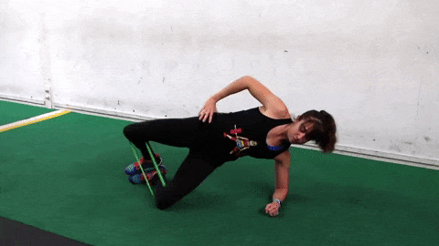Разместите резинку чуть ниже колена. Обопритесь на локоть. Делайте боковую планку и одновременно разводите колени в стороны. Прорабатываются мышцы пресса, внутренняя поверхность бедра, ягодицы.
Упражнение №2
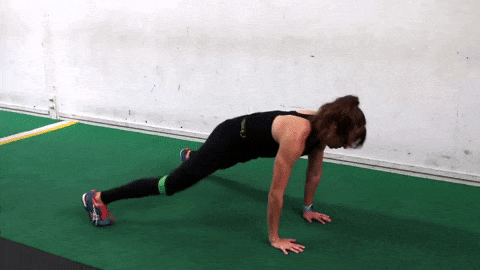Встаньте в планку на вытянутых руках. В прыжке разводите ноги в стороны и собирайте в исходное положение. Хорошее упражнение для ягодиц и пресса.
Упражнение №3
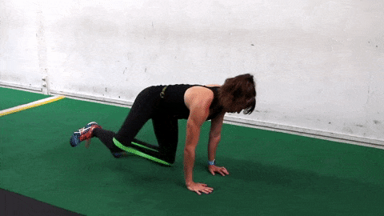Переместите резинку на колени. Встаньте на четвереньки, максимально отводите ногу в сторону. В верхней точке старайтесь сделать паузу или попружинить. Прорабатываются ягодицы и внутренняя поверхность бедра.
Упражнение №4
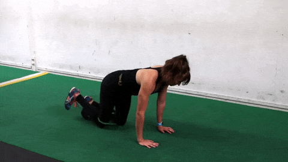В той же позе сделайте мах согнутой в колене ногой вверх. Старайтесь, чтобы стопа была направлена вверх — так, будто вы хотите оставить отпечаток на потолке. Качаются ягодицы и задняя поверхность бедра.
Упражнение №5
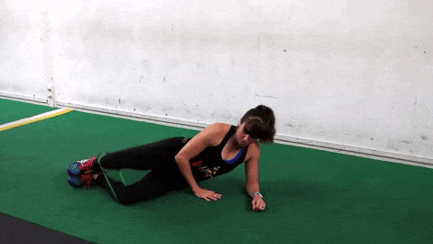Лежа на боку с согнутыми коленями, отводите одну ногу в сторону. Резинку лучше сдвинуть чуть ниже колена. Отличное упражнение для внутренней поверхности бедра.
Упражнение №6
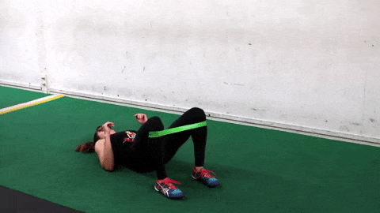Плечевой мост с резинкой. Поднимайте ягодицы вверх до максимума. Чтобы усложнить упражнение, не опускайте их на пол, держите всё время на весу.
Упражнение №7
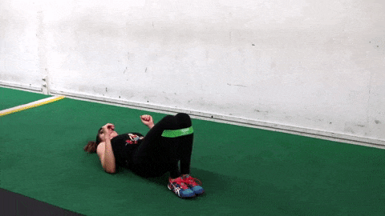Более сложная вариация: соедините стопы на полу, поднимайте ягодицы и в верхней точке разводите колени в стороны.
Упражнение №8
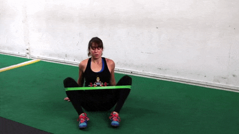Хороший способ «добить» мышцы внутренней поверхности бедра. Сядьте на пол, расположите резинку чуть ниже колена. Разводите ноги в стороны.
Упражнение №9
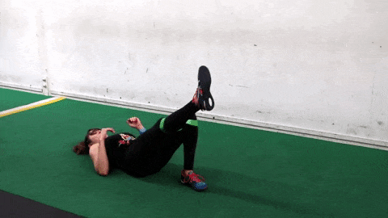Лёжа на спине, поднимайте ягодицы, вытянув одну ногу. В самой верхней точке задержитесь на пару секунд. Повторите то же самое с другой ногой.
Упражнение №10
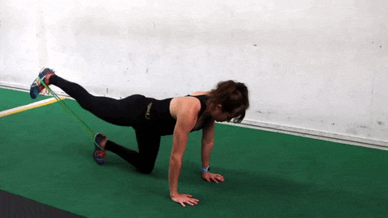Встаньте на четвереньки. Один конец резинки зацепите за левую ногу, другой — за правую. Делайте махи назад, чтобы нога была параллельна полу. В верхней точке чуть попружиньте.
Упражнение №11
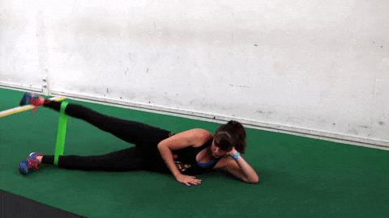Переместите резинку на голень. Лёжа на боку, поднимайте ногу вверх. Следите за тем, чтобы стопа была параллельна полу.
Упражнение №12
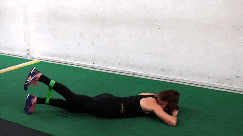Поднимайте ногу вверх, лёжа на животе. Акцент — на ягодице и задней поверхности бедра. Следите за поясницей — она не должна болеть. Для этого сильно напрягайте пресс.
Упражнение №13
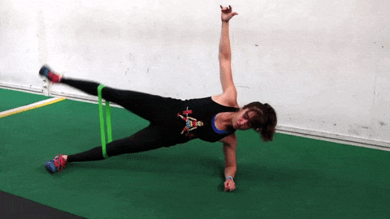Вариант для продвинутых. Стоя в боковой планке на локте, поднимайте ногу вверх. Это упражнение в том числе на баланс.
Упражнение №14
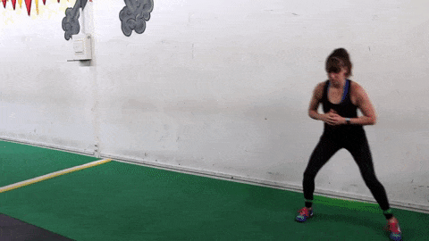С резинкой на голенях походите на полусогнутых ногах вправо и влево, вперёд и назад.
Упражнение №15
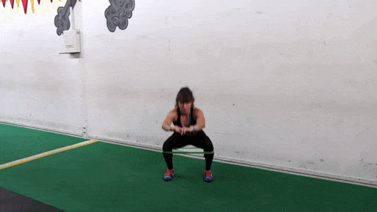Поднимите резинку на колени. Приседайте так, чтобы колено не заходило за пальцы ног — будто вы садитесь на стул. При подъёме вверх отводите ногу в сторону.
Упражнение №16
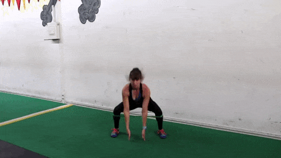В прыжке разводите ноги в стороны, не разгибая колени. Делайте махи руками вверх и вниз.
Упражнения для верхней части тела
Упражнение №17
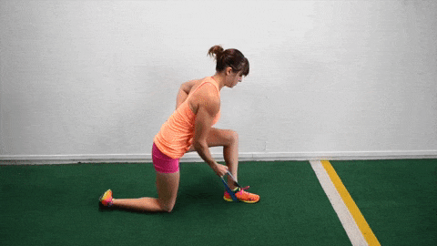Встаньте на правое колено, зацепите резинку за стопу левой ноги. Отводите правую руку, согнутую в локте, назад. Движение должно идти вдоль тела. Поменяйте сторону и повторите.
Упражнение №18
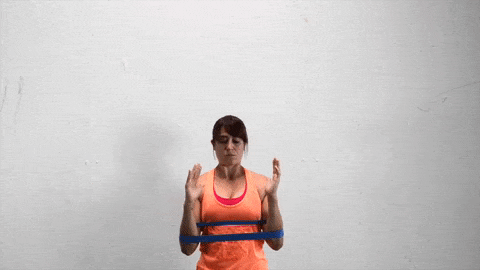Наденьте фитнес-резинку на руки так, чтобы она была чуть ниже локтей. Максимально разведите руки в стороны. Поднимайте их, в верхней точке растягивайте резинку ещё сильнее.
Упражнение №19
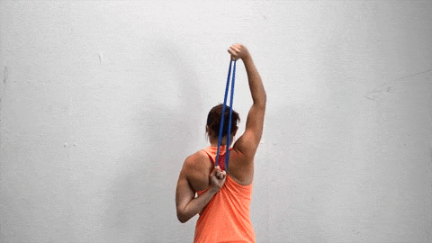Зацепитесь за резинку руками за спиной. Растягивайте её вверх так, чтобы хорошо напрягался трицепс руки, идущей вверх.
Упражнение №20
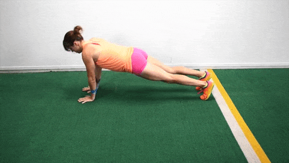Расположите резинку на предплечьях. Встаньте в планку. Отжимайтесь так, чтобы руки сгибались вдоль тела. Передвиньтесь влево или вправо и повторите.
Упражнение №21
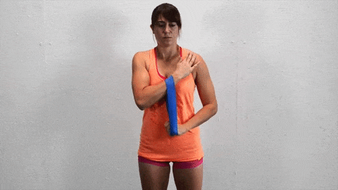Зацепите резинку чуть ниже запястья одной руки, прижмите ладонь к плечу. Второй рукой максимально растягивайте резинку вниз.
Упражнение №22
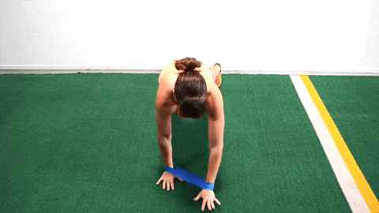Наденьте резинку на запястья. Встаньте в планку на прямых руках. Одной рукой переступайте вперёд, другой — вбок.
Упражнение №23
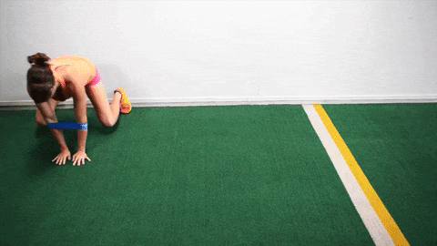Поднимите резинку на локти. Встаньте на четвереньки, переступайте вбок на носочках, передвигайте руки. Важно не дотрагиваться до пола коленями, всё время держаться на весу.
Упражнение №24
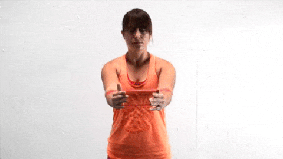Расположите резинку на предплечьях. Разводите руки максимально в стороны. В самой крайней точке попружиньте.
Упражнение №25
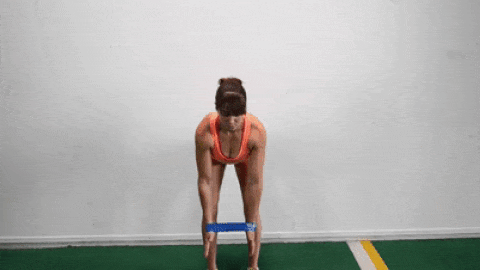Сдвиньте резинку на запястья. Наклонитесь вперёд с прямой спиной. Сгибайте руки вдоль тела, сводите лопатки. В верхней точке максимально растягивайте резинку в стороны.